任务166
A blue car parked in the seventh aisle of the parking lot of the Nike Factory Store with an empty spot in front of it and between a white and lighter blue colored car.
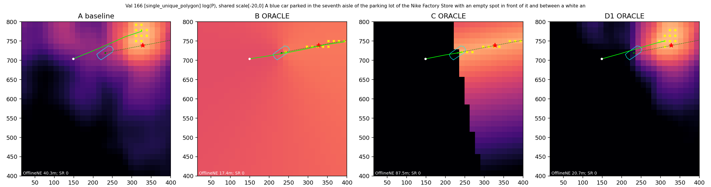
GT方向仅离线生成；多Polygon含三角定位特权。红星=GT，青线=Polygon，绿虚线=Oracle射线，黄叉=Top10，绿实线=实际轨迹；热图为log(P)，统一色阶[-20,0]。点击图片查看原尺寸。
中文报告 · 逐任务闭环CSV · 逐任务排名JSON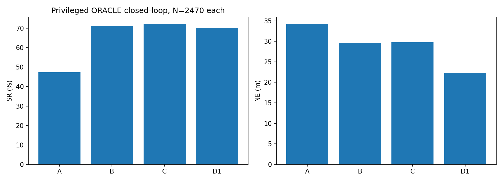
A blue car parked in the seventh aisle of the parking lot of the Nike Factory Store with an empty spot in front of it and between a white and lighter blue colored car.

A black car that is next to a white car and a long light green border, and has another black car behind it, in the second row from the bottom in the parking lot of the One-Stop building, nearest to the edge of the building
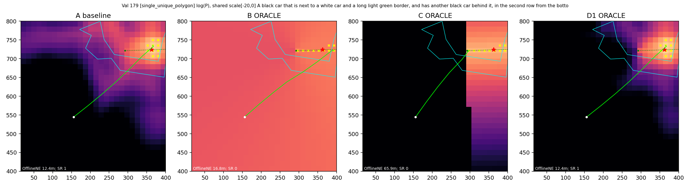
The black car that is between the green square building and the dark blue car that is at the end of the middle bottom row of the West Midlands Police Custody Suite parking lot.
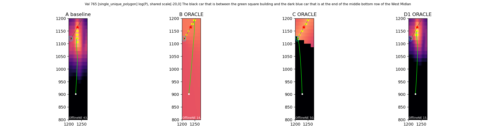
the row of brown houses along Leslie Road, across the street from a gray building.
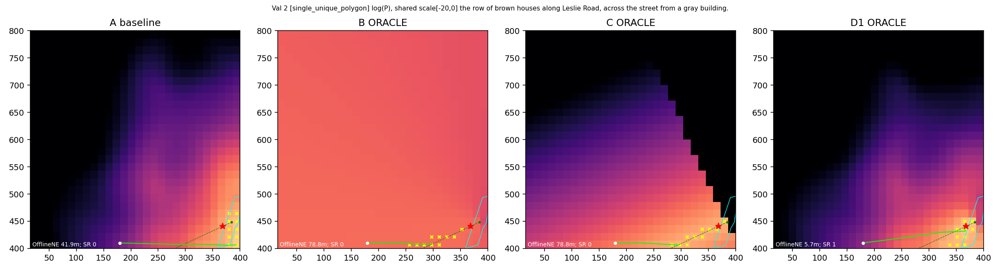
This building is the entire row of houses on Leslie Road. Although it's a terrace it should probably be classed as separate building/s
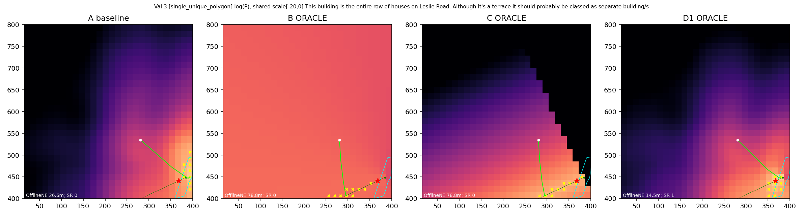
The white car on The Broadway that is beside a red car parked diagonally in the driveway with a straight black car.
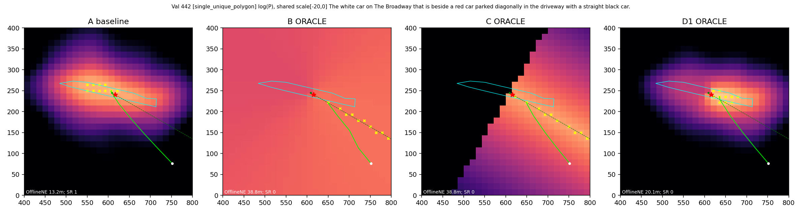
The row of grayish brown houses on Leslie Road to the left of the gray house at the intersection with Wellington Road.
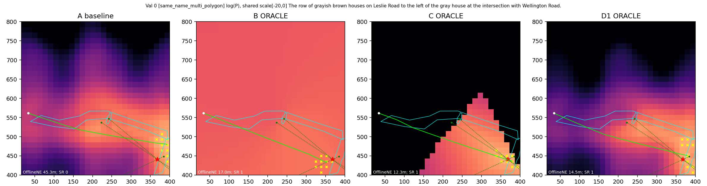
The large gray and white building with a huge parking lot off of Wellington Road.
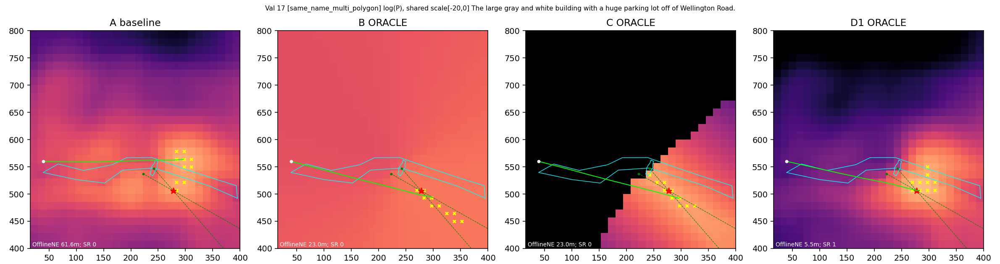
Building that shares space with the Haddon Library building along downing Street.
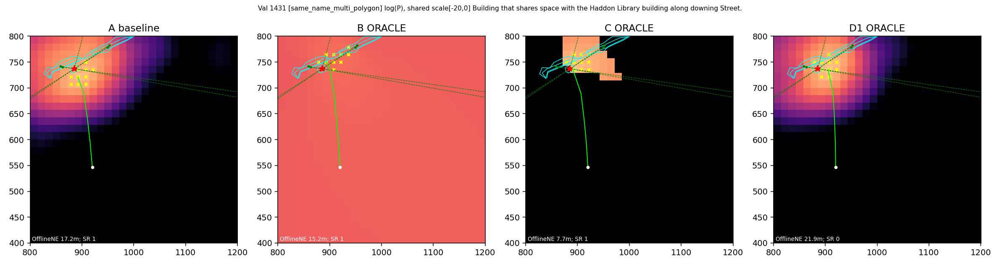
The red car that is parked between a blue car and a white car on Eden Street, in front of the fifth building from the large tree at the end.
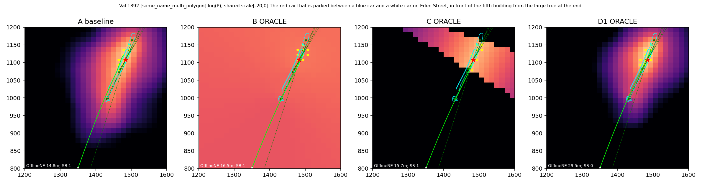
The long row of houses all the way down Leslie Road on the same side as the Willmore Road.
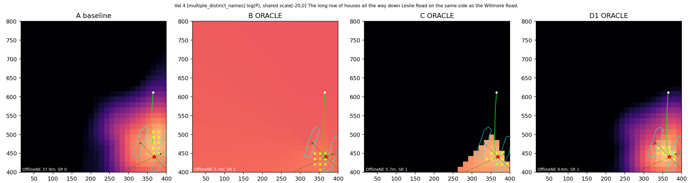
This is a white car parked on Willmore Road. There is no car parked immediately behind this car. There is a black car in front of it. The car is facing away from Celine Grove.
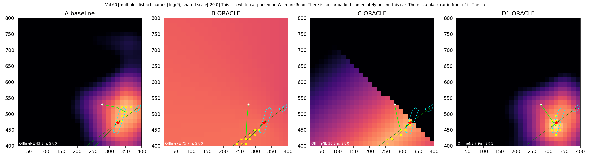
The long row of gray houses with cars parked in front of them along Leslie Road.
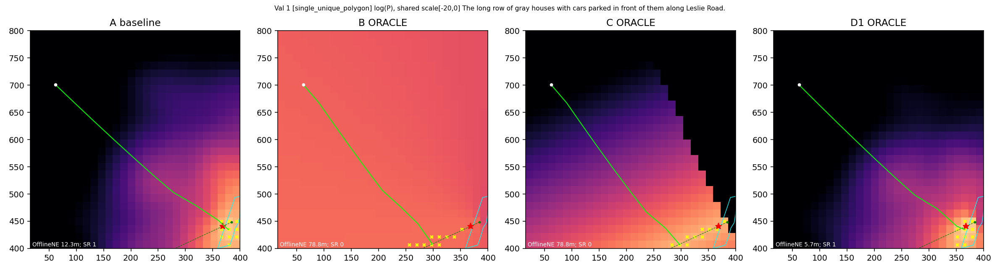
The brown house that is 4th from the left in the row of brown houses behind the long row of green trees along Wellington Road.
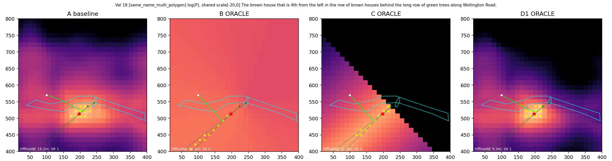